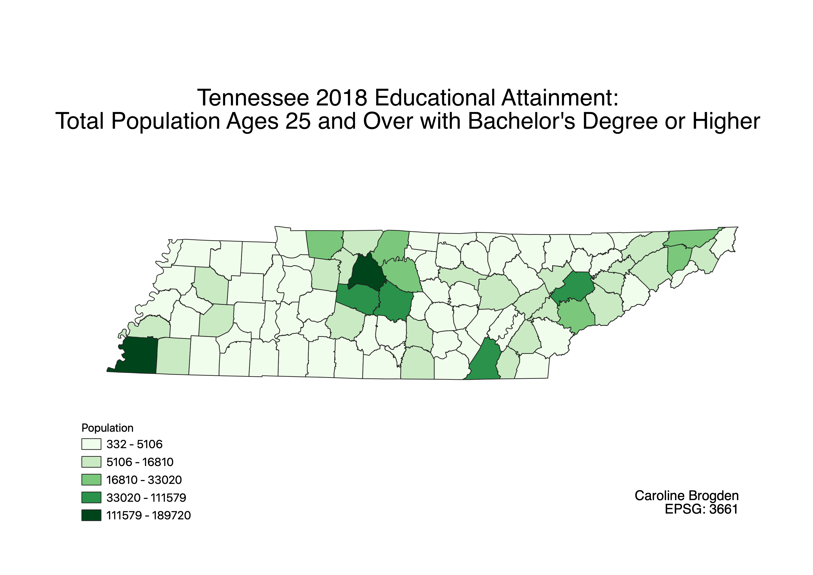

Homework 7: Census data choropleth
Caroline Brogden
The following map presents data for Tennessee's educational attainment according to Census data from 2018. The two counties with the largest population of 25-y/o-and-older with bachelor degrees or higher are Shelby (southwest corner) and Davidson county. Davidson is home to Nashville, one of the south's most prominent cultural, economic, and educational hubs. It makes similar sense that Shelby, TN has a high concentration of the aforementioned population, but for different reasons; Shelby is the state's most populous county. While this map represents specific data, it is a cursory reflection of education in TN for myriad reasons, including the parameters of data collection itself, i.e., age, degree, etc.

Data used for this project
CSV dataset
Link to Tennessee 2018 Counties shapefile